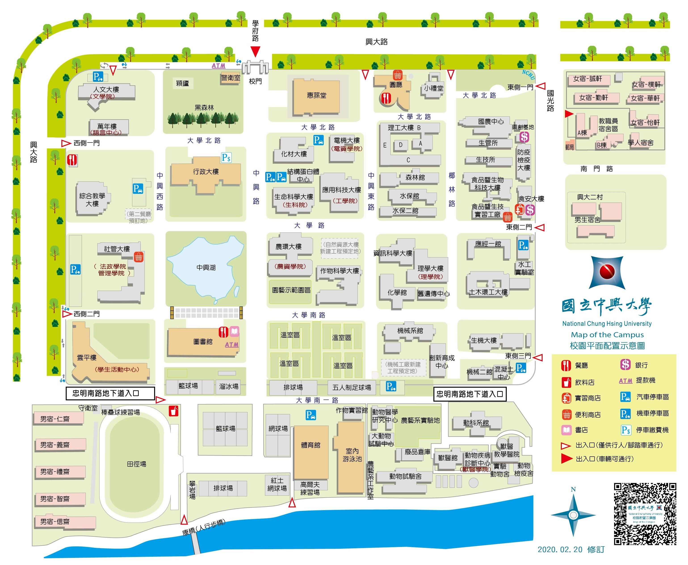

此頁面為中興大學校區位置總配置圖 國立中興大學,位於臺中市南區，占地約53公頃，更是中部區網中心,扭轉中部地區網路。 設有文學院、農業暨自然資源學院、 理學院、工學院、生命科學院、
獸醫學院、管理學院及法政學院。圖上面有建築、道路、餐廳、銀行、飲料店、提款機、實習商店、汽機車停放區等示意圖

|
|
|
|---|---|
校區位置總配置圖 |
|
|  | |
此頁面為中興大學校區位置總配置圖 國立中興大學,位於臺中市南區，占地約53公頃，更是中部區網中心,扭轉中部地區網路。 設有文學院、農業暨自然資源學院、 理學院、工學院、生命科學院、 |
|
回到首頁 |
|
| ©National Chung Hsing University | |
| 國立中興大學 | |
| 402 台中市南區興大路145號 | |
| Tel : 04-22873181 | |